Page 1 / 原始页码 949
第 13 篇 动物体的结构与功能
为什么蜥蜴要作深呼吸
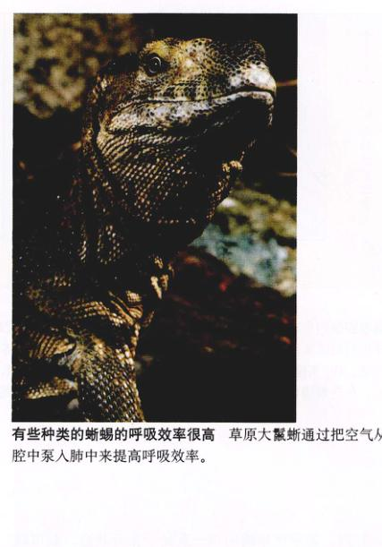
有些种类的蜥蜴的呼吸效率很高 草原大鬣蜥通过把空气从喉腔中泵入肺中来提高呼吸效率。
有时候，一些直观的观察能使我们发现很多奇异的事实。刚开始，我们会觉得这些事实并没有什么意义，但经过细致的研究，我们就会从中获得有意义的结论。下面就让我们从观察蜥蜴的快速移动开始吧。
蜥蜴在快速移动时有些像足球场上的一名后卫，当一侧的足向前移动时，另一侧的足就同时蹬离地面。这使得它每向前迈一步，身体就要随之摆动。也正是这种运动姿态，使得身体成为其快速运动的支撑。当一侧的足向前伸时，对侧的肋间肌收缩，肋骨前移，扩张胸腔，实现呼吸。
对快速移动的蜥蜴而言，其肋间肌应该有一些其他的作用。这个事实乍看并未没有什么意义。
在静息状态，蜥蜴通过扩张胸部进行呼吸，就像人类一样。胸部扩张得越大，胸腔内的压强就越小，这样就可以吸入更多的空气。人是通过收缩胸腔下部的膈肌来扩张胸腔的，而蜥蜴没有膈肌。取而代之的是，通过同时收缩肋间肌，带动肋骨，扩张胸腔，实现呼吸。
这就出现了一个问题。蜥蜴在快速移动时，由于需要交替收缩肋间肌以迈步前行，因而就不可能同时再收缩胸部两侧的肋间肌来充分扩张胸腔，实现高效的呼吸。从这个矛盾的事实中，引出了一个关于快速移动中的蜥蜴是如何呼吸的假说——轴向约束假说 (axial constraint hypothesis)：当蜥蜴快速移动时，存在速度依赖性的轴向约束机制，从而阻止有效的肺通气。
如果这个假说成立，就会得出如下使人困惑的进化观点：当蜥蜴因快速移动而需要更多的氧气时，其呼吸效率反而降低了。
Elizabeth Brainerd 博士 (University of Massachusetts, Amherst) 专门从事关于蜥蜴的研究。她从几年前就开始着手研究这个令人困惑的现象。她的研究从测定耗氧量开始。
对耗氧量进行研究是一条直接的途径。如果轴向约束假说是正确的，那么处于运动状态的蜥蜴应该表现出低耗氧量，因为它的呼吸效率正处于相对较低的状态，这正是她和她的同事们所观察到的现象。通过研究固定在踏车上的鬣蜥 (Iguana iguana)，他们发现，正如假说所预测的那样，鬣蜥的耗氧量随着运动的进行而降低。
但是，出乎意料的是，另一种蜥蜴——草原大鬣蜥 (Varanus exanthematicus) 却表现出完全相反的结果。随着运动速度的加快，这种大蜥蜴的耗氧量却不断地增加。这一结果暗示一定有人所不知的因素在这种大蜥蜴身上起作用。这一现象打破了轴向约束假说。
下面应该怎么做？研究小组对这种大蜥蜴进行了更加细致的研究，设计了一系列的实验来寻找答案。通过对蜥蜴肺部进行X射线透视，直接观察肺通气的全过程。X射线照片揭穿了草原大鬣蜥运动的秘密：一个呼吸循环开始时，正如轴向约束假说所预测的那样，吸入的空气并非全部进入肺中，一部分空气充入了喉部的喉腔。随着呼吸的进行，喉腔开始压缩，将其中的空气压入肺内。被压入的空气提高了呼吸的效率，就好像喷射引擎的加力燃烧室的作用一样。大鬣蜥正是通过这种作用弥补了运动时肺扩张的不足。
实验
研究小组开始着手验证他们提出的关于喉腔泵的理论。当蜥蜴将空气吸入时，它闭上口，同时关闭内鼻孔，使空气充入喉腔，再配合喉部的肌肉，将喉腔内的空气泵入肺内。
Page 2 / 原始页码 950

蜥蜴喉腔泵的影响 (a) 理论：轴向约束假说预测，当运动速度超过某一个阈值时，肺通气量 ($V_E$) 将随速度的增加而减少，在运动终止后的恢复期达到最大值。其中，肺通气量是通过呼出气体的体积来测定的。如果没有轴向约束，肺通气量应当在运动时达到最大值。(b) 实验：大鬣蜥所表现出的现象与无轴向约束的预测相符，但是如果破坏它的喉腔泵系统，它将表现出典型的轴向约束特征。所以，有些蜥蜴可以通过喉腔泵来克服肺通气的轴向约束带来的影响。
泵入肺内。如果使蜥蜴的口一直处于张开状态，就可以破坏喉腔泵系统的正常工作。当喉腔开始压缩的时候，空气将会从张开的口中逸出。训练蜥蜴在踏车上跑动，用一个塑料面罩套住蜥蜴的口和鼻孔。通过测量从口抽出的空气的量来测量蜥蜴的通气量。呼气量 ($V_E$) 是在不同速度的运动的后期和恢复期的初期测定的。速度区域选定在 0~2 km/h，而这种蜥蜴在踏车上能达到的最大速度为 7 km/h。
为了破坏喉腔泵系统，他们用塑料管将蜥蜴的口撑开，固定成张开的状态。而另一个平行实验，使用同一类蜥蜴，但保持它的喉腔泵系统完好。
实验结果
对喉腔泵完好和喉腔泵失效的草原大鬣蜥进行的平行实验：
- 喉腔泵系统完好 当喉腔泵系统完好时，$V_E$ 随速度的增加而增加，并且在速度到达 2 km/h 时达到最大值，之后在恢复期时不断下降（图(b)中蓝线）。这一实验结果与理论上没有轴向约束的动物所表现的一致。
- 喉腔泵系统破坏 当喉腔泵系统被破坏时，$V_E$ 随速度的增加而增加，直到速度到达 1 km/h。之后，速度在 1~2 km/h 之间时，$V_E$ 由于肺通气量受到约束开始减小。在恢复期，由于约束的消失，$V_E$ 开始逐渐增大。$V_E$ 的增大用来补偿之前运动时无氧代谢造成的缺氧之乏。
通过对比实验结果，研究小组得出如下结论：草原大鬣蜥其实是要受到轴向约束的，但是它们通过喉腔泵系统巧妙地克服了这一约束，提高了肺通气量。当实验中喉腔泵系统被人为破坏后，实验结果明显表现出受轴向约束。
研究小组发现了喉腔泵系统与提高运动能力之间的关系，虽然他们还没有得出更加详细的实验分析结论。在他们的实验中，有 6 种运动能力强的蜥蜴具有喉腔泵系统，而 3 种运动能力较差的则不具有。我们可以推测，喉腔泵系统是进化中出现的，用来增强呼吸效率，以提高运动耐力的有效途径。蜥蜴的喉腔泵系统和两栖动物以及呼吸空气的鱼类有很多相似之处。这些动物在呼吸时，空气首先进入口腔，之后闭紧口和内鼻孔，通过压缩口腔将空气压入肺内。这两种机制的相似性提示我们，也许其中的一种是从另一种进化而来的。
Page 3 / 原始页码 951
第 49 章 动物体的组成
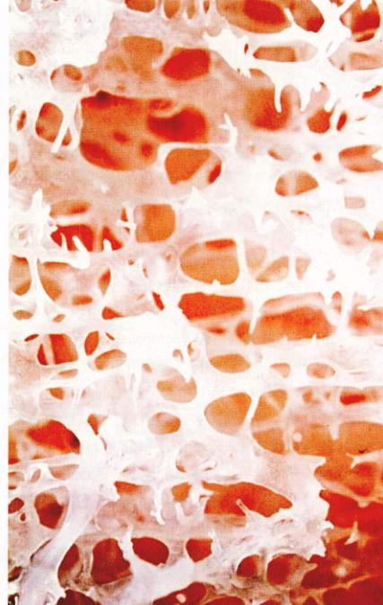
图 49.1 硬骨 和脊椎动物的大多数组织一样，硬骨是一种动态结构，总在不断地自我更新。
当谈及动物时，人们总是会联想到他们的宠物，例如狗或猫等，或是在动物园、农场、水族馆看到的动物，或是在野外看到的野生动物。而当谈及生物的多样性时，人们也许会联想到肉食性的狮子与老虎，草食性的鹿与羚羊，面相凶残的鲨鱼与聪明顽皮的海豚之间的差异。尽管这些动物之间存在着种种差异，它们却同属于脊椎动物。所有的脊椎动物都具有类似的生理结构——相似的器官以相似的方法完成相似的功能。本章我们将详细地讨论脊椎动物体奇妙的结构与功能（图 49.1）。
Page 4 / 原始页码 952
49.1 脊椎动物体是一个功能完备的系统
49.1.1 动物体的组成
所有的哺乳动物体都有着相同的结构（图 49.2），而且与其他脊椎动物体的结构也很相似。这种机体的结构像是一个相互嵌套的管道结构。最内侧的管道是消化管，它从身体的一端延伸到另一端（由口至肛门）。这个管道被嵌套在另一个管道——体腔 (coelom) 之中。对于鱼类、两栖类和多数的爬行类动物，体腔又被再分为两个腔室，一个容纳心脏，另一个容纳肝脏、胃和肠。而对于哺乳动物和另一些爬行类，一层膜状的肌肉——膈肌 (diaphragm) 将体腔分为腹腔 (peritoneal cavity) 和胸腔 (thoracic cavity)。腹腔容纳胃、肠和肝脏，而胸腔再分为围心腔 (pericardial cavity) 和胸膜腔 (pleural cavity)。其中围心腔容纳心脏，胸膜腔则容纳肺。所有的脊椎动物的肢体都是由骨骼 (skeleton) 支撑的。骨骼由骨和软骨连接而成，并随着机体的生长而生长。表面凹凸不平的颅骨包围着脑，圆柱状的脊柱 (vertebrae) 包围着脊神经索，又称脊髓 (spinal cord)。
脊椎动物的机体构成分为4个层次：①细胞；②组织；③器官；④（由器官组成的）系统。和其他动物一样，脊椎动物体也是由不同种类的细胞构成的。一个发育成熟的脊椎动物体内含有 50 到上百种不同的细胞。

图 49.2 脊椎动物体的结构 所有的脊椎动物都具有背部中枢神经系统。哺乳动物和一些爬行动物具有膈肌，将体腔分为胸腔和腹腔。
1) 组织
一群结构和功能相似的细胞构成组织 (tissue)。在发育初期，胚胎分化为三种最基本的组织，被称为胚层 (germ layer)，由内向外分别是内胚层 (endoderm)、中胚层 (mesoderm) 和外胚层 (ectoderm)。这些胚层又依次分化出多种不同的脊椎动物所特有的细胞和组织。一个发育成熟的脊椎动物包括四大类基本组织 (primary tissue)：上皮组织、结缔组织、肌肉组织和神经组织（图 49.3），下面会在不同的章节作具体的介绍。

图 49.3 脊椎动物组织类型 上皮组织用蓝箭头标出，结缔组织用绿箭头标出，肌肉组织用红箭头标出，神经组织用黄箭头标出。
Page 5 / 原始页码 953
2) 器官和系统
器官 (organ) 是由一些不同的组织构成的结构和功能的单位（图 49.4）。以心脏为例，心脏包括上皮组织、结缔组织和心肌，并且且与神经相连，以保证有节律的心跳。器官系统 (organ system) 则是由一些器官构成，共同实现机体的各种功能。比如，消化系统由消化道、肝脏、胆囊和胰腺组成。这些器官相互配合以实现对食物的消化和吸收的功能。脊椎动物共有 11 个基本的系统（表 49.1 和图 49.5）。
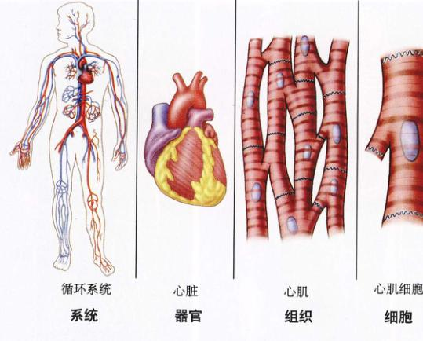
图 49.4 构成机体的不同层次 相似的细胞一起构成组织。组织的联合起来构成器官。一些器官一起工作，以完成一定的生理功能，称为系统。循环系统就是人体系统之一。
表 49.1 脊椎动物的主要系统
| 系统 |
功能 |
组成 |
详细介绍 |
| 循环系统 |
实现血细胞、气体和化学物质的体内运输 |
心脏、血液、淋巴和淋巴器官 |
第 52 章 |
| 消化系统 |
消化食物并从中吸收可溶性营养物质 |
口、食道、胃、肠、肝脏、胰腺 |
第 51 章 |
| 内分泌系统 |
调节和协调整个机体的各种功能 |
脑垂体、肾上腺、甲状腺和其他内分泌腺 |
第 56 章 |
| 外皮系统 |
覆盖和保护机体 |
皮肤、毛发、指甲、羽毛、鳞片、汗腺等 |
第 57 章 |
| 淋巴 / 免疫系统 |
细胞外液和脂肪的循环与运输，抗细菌感染和抗癌作用 |
淋巴管、淋巴结、胸腺、扁桃体、脾脏 |
第 57 章 |
| 肌肉系统 |
产生机体运动 |
骨骼肌、平滑肌、心肌 |
第 50 章 |
| 神经系统 |
接收刺激，整合信息，支配机体 |
神经、感觉器官、脑、脊髓 |
第 54、55 章 |
| 生殖系统 |
生殖 |
睾丸、卵巢和生殖器 |
第 59 章 |
| 呼吸系统 |
呼吸和气体交换 |
肺、气管、鳃和其他气体通道 |
第 53 章 |
| 骨骼系统 |
保护和支持，帮助运动 |
硬骨、软骨、韧带 |
第 50 章 |
| 排泄系统 |
通过血液排出代谢废物 |
肾、膀胱以及排泄管 |
第 58 章 |
Page 6 / 原始页码 954
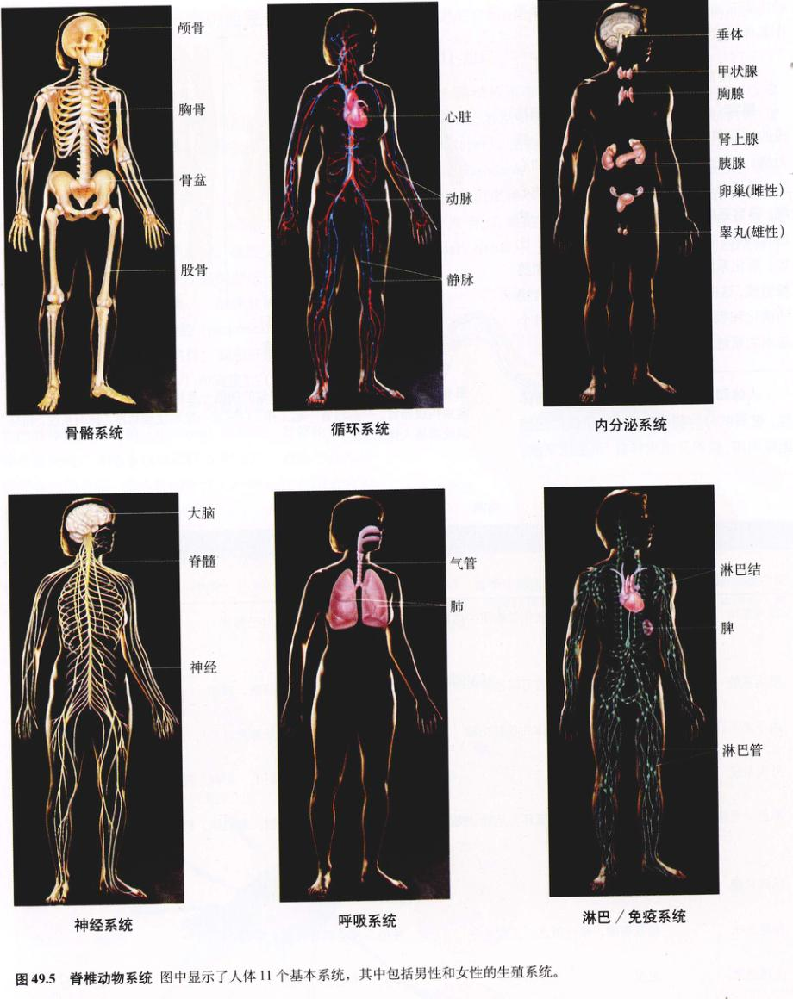
图 49.5 脊椎动物系统 图中显示了人体 11 个基本系统，其中包括男性的和女性的生殖系统。
Page 7 / 原始页码 955
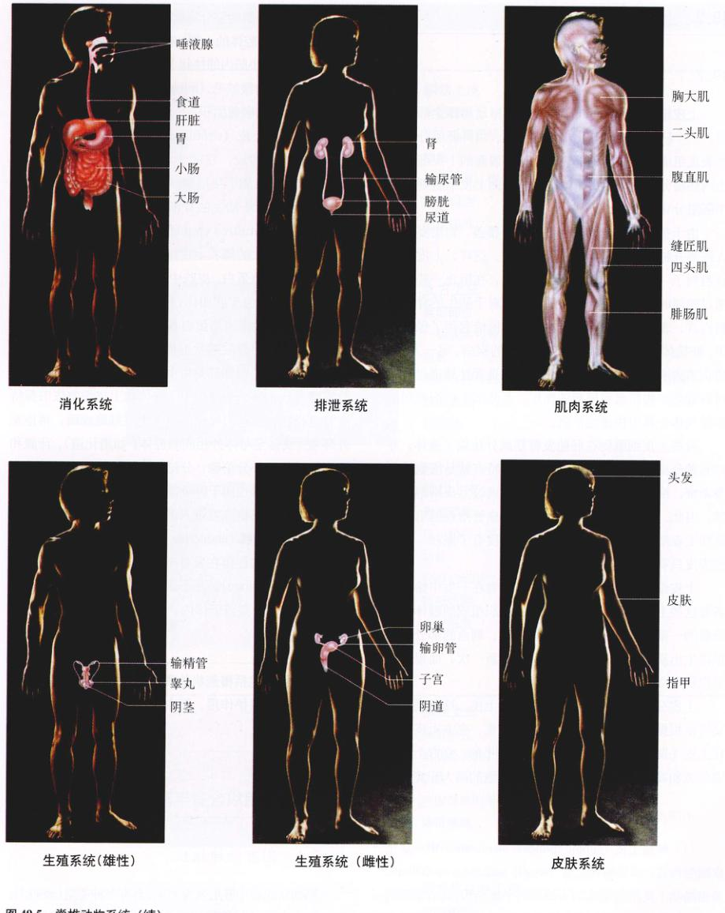
图 49.5 脊椎动物系统（续）
Page 8 / 原始页码 956
49.2 上皮组织组成膜与腺体
49.2.1 上皮组织的特点
上皮细胞 (epithelium) 覆盖了脊椎动物体全部的表面。三个胚层都能够分化出上皮细胞。由外胚层分化的表皮组成了皮肤的外层。消化道内表面的上皮细胞是由内胚层分化而来的。而体腔的内表面上皮细胞则是由中胚层分化而来的。
由于机体表面全部被上皮细胞所覆盖，物质要想进入或离开机体就一定要通过上皮细胞。这样，上皮细胞就起到了一种特殊选择性屏障的作用，在阻止一些物质通过的同时又帮助另一些物质通过。对于陆生的脊椎动物而言，表皮对水的透性对机体恰恰起到了保护作用，使机体免于失水和一些气体的疾病。另一方面，消化道内表皮能够使消化的营养物质选择性地通过，并对有毒性的物质起到屏蔽的作用。而肺部上皮细胞则能够使气体在其种快速地扩散。
有些上皮细胞在胚胎发育期就分化成了腺体，专门起着分泌的作用。上皮细胞的一个特点就是细胞排列很紧密，细胞间隙很小。血管不能够穿过上皮细胞的间隙，因此，营养物质和氧气只能通过血管附近的组织扩散到上皮细胞中。这就使得表皮的厚度有了限制，一般的表皮只有一层或几层上皮细胞。
上皮细胞有强大的再生能力，动物在一生中始终更新着这些上皮细胞。肝脏是由上皮组织组成的腺体，当肝脏的一部分在外科手术中被切除后，剩余的部分还可以再生出新的肝组织。表皮平均两周更新一次，而胃内的表皮则每 2~3 天就更新一次。
上皮分为两种：单层上皮和复层上皮。这两类上皮又可以根据细胞的形状细分为鳞状上皮、立方上皮和柱状上皮（表 49.2）。鳞状上皮细胞是扁平的，立方上皮细胞的宽和高几乎相等，而柱状上皮细胞的高大于宽。
不同类型的上皮组织
(1) 单层上皮 (simple epithelial membrane) 由一层上皮细胞构成。单层鳞状上皮 (simple squamous epithelium) 是由鳞状上皮细胞组成的不规则的平面结构，具有渐缩的边缘。这种上皮一般出现在肺和毛细血管中，这种薄而精细的结构有利于分子在其中快速地移动（气体分子的扩散）。单层立方上皮 (simple cuboidal epithelium) 一般出现在一些腺体的管道内表面，而单层柱状上皮 (simple columnar epithelium) 则一般出现在气管和胃肠道内表面。大量的杯状细胞 (goblet cells) 散布于柱状上皮细胞之间，这种特殊分化的细胞能够分泌黏液。气管内的柱状上皮细胞顶端表面（向着腔体的一侧）有纤毛，纤毛的摆动可以使黏液流向喉部。小肠内的柱状上皮细胞顶端表面形成指状的突起，被称为微绒毛 (microvilli)，这种特殊的结构大大增加了小肠的吸收面积。
(2) 复层上皮 (stratified epithelial membrane)：由几层上皮细胞构成，它的命名由最上层的细胞结构决定。例如，表皮属于复层鳞状上皮 (stratified squamous epithelium)。对于陆生的脊椎动物，这种结构又被称为角化上皮 (keratinized epithelium)。因为这种上皮的最上一层是一层死亡的鳞状上皮细胞，其中充满了一种防水的蛋白质——角蛋白。皮肤中沉积的角蛋白经过磨损会形成胼胝。嘴唇与皮肤相比，显得十分容易失水干燥，甚至皲裂，这正是因为角蛋白具有防水的特性，而嘴唇则是由于无角质层的复层鳞状上皮构成的缘故。
脊椎动物的腺体都是由上皮组织内陷形成的。在外分泌腺 (exocrine gland) 中，腺体和上皮细胞依旧保持有管道相连。管道引导分泌物至上皮细胞表面，再排至外环境（或排至与体外相同的腔体，如消化道）。汗腺和皮脂腺就属于外分泌腺，分泌物直接排到皮肤的外表面。附属消化腺也属于外分泌腺，如唾液腺、肝脏和胰腺，它们的分泌物直接进入消化道。
(3) 内分泌腺 (endocrine gland)：是无管的腺体，它们与上皮细胞的连接在发育中消失了。它们的分泌物被称作激素 (hormone)，并不通过管道运送到上皮而是进入毛细血管内，存于体内。相关内容将在第 56 章详细讨论。
49.3 结缔组织含有丰富的细胞间质
49.3.1 固有结缔组织
结缔组织由中胚层发育而成，具有多种类型（表 49.3）。这些形态各异的结缔组织可分为两大类：①固有结缔组织 (connective tissue proper)，可再分为疏松结缔组织和致密结缔组织；②特化结缔组织 (special connective tissue)，包括软骨、硬骨和血液。起初也许人们会感到奇怪，差别如此之大的组织为什么会被归为同一类呢？这是因为所有的结缔组织都具有相同的结构特点：都有丰富的细胞间质，细胞分散于细胞间质之中。这种细胞间质又被称为组织的基质 (matrix)。在硬骨中，细胞间质呈结晶状，所以硬骨很坚硬；而在血液中，胞外基质是血浆，所以血液具有流动性。
Page 9 / 原始页码 957
表 49.2 上皮组织
|
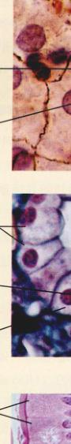
|
单层上皮
鳞状上皮
典型部位：肺、毛细管壁和血管
功能：细胞较薄，物质便于扩散穿过细胞
特征细胞：上皮细胞
|
|
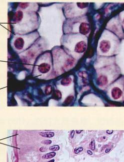
|
立方上皮
典型部位：一些腺体和肾小管、卵巢表面
功能：细胞有特殊的运输通道；具有分泌和吸收的功能
特征细胞：腺细胞
|
|
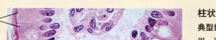
|
柱状上皮
典型部位：胃、肠和一部分呼吸道的表面
功能：较厚的细胞层，起保护、分泌和吸收的作用
特征细胞：上皮细胞
|
| 复 层 上 皮 |
|
Image: Stratified Squamous
|
鳞状上皮
典型部位：皮肤外表面；口腔内表面
功能：坚固的细胞层；起保护作用
特征细胞：上皮细胞
|
|
Image: Pseudostratified Columnar
|
假复层柱状上皮
典型部位：部分呼吸道内表面
功能：分泌黏液；纤毛协助黏液运动；保护作用
特征细胞：腺细胞、纤毛上皮细胞
|
Page 10 / 原始页码 958
表 49.3 结缔组织
|
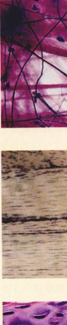
|
疏松结缔组织
典型部位：皮下，器官之间
功能：支持、绝缘、储存、营养表皮
特征细胞：纤维原细胞、巨噬细胞、肥大细胞、脂肪细胞
|
|
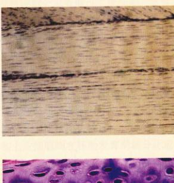
|
致密结缔组织
典型部位：腱、肌肉护套、肾、肝脏、真皮
功能：柔韧且坚固的连接
特征细胞：纤维原细胞
|
|
|
软骨
典型部位：脊柱、膝盖和其他关节、耳、鼻、气管
功能：具有柔韧性的支持作用；缓冲减震；减少硬骨表面摩擦
特征细胞：软骨细胞
|
|
Image: Bone
|
硬骨
典型部位：大部分骨骼
功能：保护内部器官；为肌肉提供坚固的支持
特征细胞：硬骨细胞
|
|
Image: Blood
|
血液
典型部位：循环系统
功能：免疫系统的通路；器官之间联系的基本手段
特征细胞：红细胞、白细胞
|
Page 11 / 原始页码 959
(1) 疏松结缔组织 (loose connective tissue)：由细胞分散在大量无定形蛋白质组成的基质 (ground substance) 当中构成。凝胶状的物质被分散在其中的蛋白纤维所加固。蛋白纤维包括：胶原纤维 (collagen)（图 49.6）；弹性纤维 (elastin)，使得组织有弹性；网状纤维 (reticulin)，形成胶原质网，起支持作用。我们所吃的果冻（添加甜味剂的凝胶）就其中含有疏松结缔组织的细胞间质。能够分泌胶原纤维和其他纤维蛋白的细胞被称为成纤维细胞 (fibroblast)。
除此以外，疏松结缔组织还包括其他种类的细胞。其中包括：肥大细胞 (mast cell)，能够分泌组胺 (histamine)（扩张血管）和肝素 (heparin)（抗凝血剂）；巨噬细胞 (macrophage)，免疫系统抵抗外来入侵的第一道防线。有关免疫系统的知识将在第 57 章作具体介绍。
(2) 脂肪组织：疏松结缔组织中还有一类细胞称为脂肪细胞 (adipose cell)，它们大量聚集，形成脂肪组织 (adipose tissue)（图 49.7）。每一个脂肪细胞内，都储存存在囊泡中的脂肪液滴，即甘油三酯 (triglyceride) 液滴。当机体需要能量时，脂肪细胞就水解甘油三酯，并将脂肪酸分泌到血液内，再由肌肉、肝脏和其他器官的细胞氧化以获取能量。成年人体内脂肪细胞的数目一般是固定的。当体重增加时，脂肪细胞肥大；当体重减少时，脂肪细胞收缩。
(3) 致密结缔组织 (dense connective tissue)：具有紧密排列的胶原纤维，这一特点使它与疏松结缔组织相比，具有更大的强度。它可分为规则与不规则两大类。规则致密结缔组织 (dense regular connective tissue) 的胶原纤维呈平行排列，好像一股绳子。连接肌肉和硬骨的肌腱 (tendon)，以及连接硬骨和硬骨的韧带 (ligament) 都属于这种结构。相反的，不规则致密结缔组织 (dense irregular connective tissue) 中的胶原纤维则有各种不同的排列和取向。这种结缔组织能够形成坚固的外层将器官包裹起来，如肾和肾上腺的囊膜 (capsule)，包绕肌肉的肌外膜 (epimysium)，包绕神经的神经束膜 (perineurium) 和包绕硬骨的骨膜 (periosteum) 也都属于这一类。
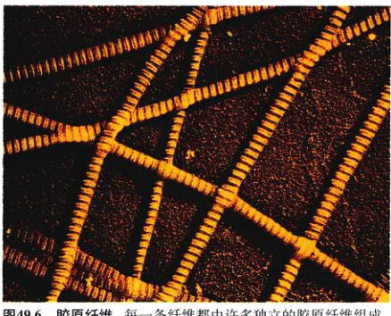
图 49.6 胶原纤维 每一条纤维都由许多独立的胶原纤维组成，并且可以产生很大的内部张力。
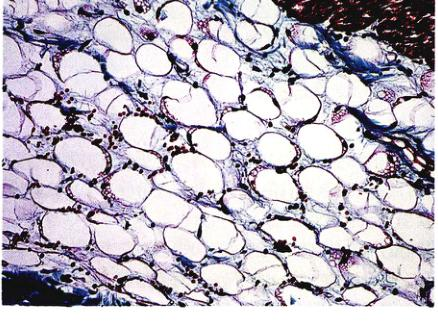
图 49.7 脂肪组织 脂肪组织归属于疏松结缔组织。脂肪以液滴的形式储存在脂肪组织中。当人的体重增加或减少时，脂肪滴也会随着变大或变小。但是，脂肪细胞的数目是不会变的。
49.3.2 特化的结缔组织
特化的结缔组织包括软骨、硬骨和血液。每一种都有自己特殊的细胞和细胞间质，完成自己特殊的功能。
1) 软骨
软骨 (cartilage)（图 49.8）是一种特化的结缔组织。它的基质由一种特殊的糖蛋白组成，胶原纤维在其中平行排列。这种结缔组织具有柔韧、坚固的特性，它不能伸长，但其坚固程度要远远好于固有结缔组织，可以产生很大的张力。作为脊椎动物的祖先，现代无颌类脊椎动物和软骨鱼类的全身骨骼都是由软骨构成的（见第 48 章）。在发育成熟的脊椎动物体内，软骨只出现在一些特定的部位，如关节处硬骨表面，使关节可以自由活动。在人体中，只有鼻尖、外耳廓、脊椎盘之间、喉部和一些其他的部位具有软骨。
Page 12 / 原始页码 960
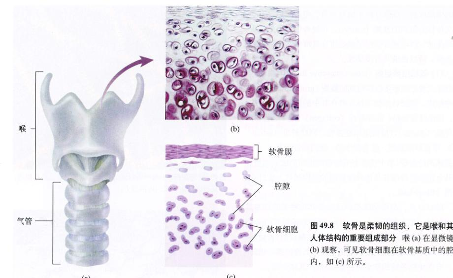
图 49.8 软骨是柔韧的组织，它是喉和其他人体结构的重要组成部分 喉 (a) 在显微镜下 (b) 观察，可见软骨细胞在软骨基质中的腔隙内，如 (c) 所示。
软骨细胞 (chondrocyte) 埋藏在软骨基质的腔隙 (lacunae) 内。虽然没有血管穿过软骨基质，但是这些软骨细胞是有生命的，它们依靠由血管通过软骨基质扩散进入的氧气和养分生存。这种扩散只有在软骨基质没有钙化的情况下才能够发生。硬骨的基质则是钙化的。
2) 硬骨
在脊椎动物胚胎发育的过程中，和其他部位相比，鳍、臂和足是最先从软骨转化为硬骨的。软骨基质从特定的部位开始钙化，所以软骨细胞不能再从基质中获得氧气和营养物质。死亡和退化的软骨被硬骨所代替。硬骨细胞 (bone cell or osteocyte)，即骨细胞在钙化为磷酸钙的细胞间质中一样可以生存。血管穿过细胞间质的中央管 (central canal) 进入硬骨。骨细胞的细胞质通过骨小管 (canaliculi) 与相邻的骨细胞相联系（图 49.9）。通过这些细胞质网络，骨细胞与中央管中的血管相联系。
这里要说明的是，并非所有的硬骨都是由软骨转化而来的，有些硬骨，如头盖骨，就是由一层不规则的致密结缔组织膜发育而成的。硬骨的组成和结构将在第 50 章详细介绍。
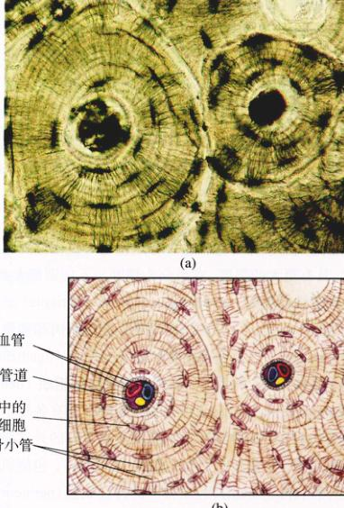
图 49.9 硬骨的结构 硬骨结构的显微照片 (a) 和模式图 (b) 显示出硬骨细胞分布在硬骨基质中的腔隙内。虽然硬骨基质已经钙化，硬骨细胞一样可以保持生命力。血管通过中心管道将营养物质输送给骨细胞。骨细胞间通过细小的微管网络相互联系，传送营养物质。
Page 13 / 原始页码 961
3) 血液
血液被归为结缔组织，是因为它具有丰富的细胞间质——血浆。血液细胞包括红血球 (erythrocyte)（或红细胞）和白血球 (leukocyte)（或白细胞）（图 49.10）。血液还包括血小板 (platelet or thrombocyte)，它是一种骨髓细胞的碎片。
红细胞是血液中最常见的细胞，每毫升血液含有 50 亿个红细胞。哺乳动物红细胞在成熟过程中失去了细胞核、线粒体和内质网。所以哺乳动物的红细胞几乎没有代谢活动。每一个红细胞含有 3 亿个含铁的蛋白质——血红蛋白 (hemoglobin)。它是脊椎动物和许多其他动物体内氧气的运送者。
白细胞有很多种，但数量的总和也不过是红细胞的千分之一。与红细胞不同，白细胞拥有细胞核和线粒体，但是缺少血红蛋白。所以，这些细胞在没有被染色的情况下，很难在显微镜下观察到。白细胞根据染色性的性质可以分为中性粒细胞 (neutrophil)、嗜酸性粒细胞 (eosinophil) 和 嗜碱性粒细胞 (basophil) 三类；其他的白细胞还包括淋巴细胞 (lymphocyte) 和 单核细胞 (monocyte)。每一种白细胞在免疫反应中都起着特定的作用，具体将在第 57 章详细介绍。
血浆是人体的大家族成员，在体内起着重要的作用，它不停地往返于每一个细胞之间。血浆的循环使得它携带的营养物质、代谢废物、热量和调节分子 (regulatory molecule)（激素）随之不断地循环。实际上，细胞所需的一种物质，包括糖类、脂类和氨基酸，都是由血浆运输供应的。细胞代谢的废物也是由血浆将其运送至肾、肝脏、肺和鳃等进行进一步处理。由内分泌腺所分泌的调节分子（激素）也是由血浆运送，调节体内大部分器官的活动。血浆还携带钠、钙等离子和多种蛋白质所需无机离子。血浆蛋白包括：纤维蛋白原 (fibrinogen)，在肝脏产生，具有促凝血作用；白蛋白 (albumin)，同样是在肝脏产生，主要作用是作为保持体液平衡维持渗透压；抗体 (antibody) 由淋巴细胞产生，发挥免疫功能。
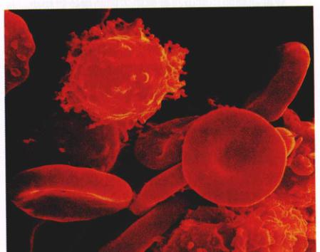
图 49.10 白细胞和红细胞 (500×) 白细胞呈球形，表面伸出大量伪足 (extending pili)。红细胞呈扁球形，中心凹陷，呈双凹圆盘状。
49.4 肌肉组织起着运动的作用，神经组织起着控制的作用
49.4.1 肌肉组织
肌肉细胞是脊椎动物体的“发动机”。它独有的特点就是具有丰富的相互联系的粗细肌纤维系统。虽然在真核细胞中这些肌纤维形成网络，使细胞具有运动能力，但是肌纤维更普遍的作用是在肌肉细胞中，专门负责肌肉的收缩。脊椎动物具有 3 种肌肉：平滑肌、骨骼肌和心肌（表 49.4）。骨骼肌和心肌又被称为横纹肌 (striated muscle)，因为其纵断面在显微镜下可以观察到横向的条纹。骨骼肌的收缩可以受意识的控制，而平滑肌和心肌的收缩一般是自发，不受意识控制的。肌肉将在第 50 章作详细介绍。
1) 平滑肌
平滑肌 (smooth muscle) 是最早进化而成的肌肉，几乎遍及整个动物界。在脊椎动物中，平滑肌存在于内脏 (viscera) 中，所以有时又被称为内脏肌 (visceral muscle)。平滑肌组织由长纺锤形细胞组成，薄片状，每一个细胞只含有一个细胞核。在一些组织中，细胞只有在神经刺激下才会收缩。一个薄片上的所有细胞作为一个单位同时收缩。在脊椎动物中，这种肌肉组成血管壁和眼中的虹膜。在其他平滑肌组织，如内脏壁平滑肌组织，肌肉细胞自身能够自发产生冲动和收缩，使得组织保持缓慢而稳定的收缩。神经对其起到调节作用。
2) 骨骼肌
骨骼肌 (skeleton muscle) 一般通过肌腱与硬骨相连。
Page 14 / 原始页码 962
表 49.4 肌肉组织

|
平滑肌
典型部位：血管、胃和肠的壁
功能：在中枢神经系统控制下做有节律地自发收缩运动
特征细胞：平滑肌细胞
|
|
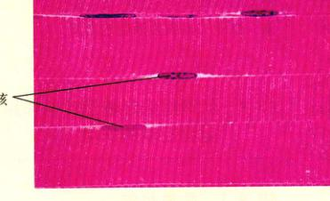
|
骨骼肌
典型部位：随意肌
功能：使机体做行走、上举、讲话等随意运动
特征细胞：骨骼肌细胞
|
|
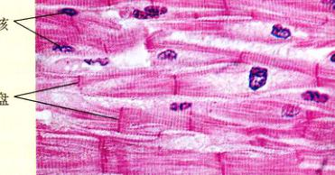
|
心肌
典型部位：心脏壁
功能：高度联系的细胞；快速传导信号，产生收缩
特征细胞：心肌细胞
|
连，当肌肉收缩时，引起骨骼绕其关节运动。骨骼肌由许多很长的肌肉细胞组成。这些细胞被称为肌纤维 (muscle fiber)，它们在肌肉中平行排列，并在肌肉末端嵌入肌腱中。每一条骨骼肌纤维经一根神经纤维刺激引起收缩。所以，当许多肌纤维在许多神经纤维刺激下发生收缩时，将产生很大的收缩张力。通过这种方式，神经系统可以控制骨骼肌收缩张力的大小。肌纤维的收缩是通过其亚结构，肌原纤维 (myofibril) 实现的（图 49.11）。肌原纤维含有高度有序排列的肌动蛋白丝 (actin myofilament) 和 肌球蛋白丝 (myosin myofilament)，这些肌纤维的有序排列使肌纤维呈现出条纹。骨骼肌纤维通过许多细胞末端对末端的融合发育而成。这种胚胎发育学的理论解释了为什么一个成熟的肌纤维具有许多细胞核。骨骼肌的结构和功能将在第 50 章作详细介绍。
3) 心肌
脊椎动物的心脏由与骨骼肌不同的横纹肌构成。与骨骼肌不同，心肌 (cardiac muscle) 由较小的、互相连接的单核细胞组成。在显微镜下，相邻的心肌细胞之间的连接处呈深色的线条，这种结构称为闰盘 (intercalated disc)。事实上，这些线条区域是相邻细胞的缝隙连接 (gap junction)。正如在第 7 章所讲的，缝隙连接允许小分子物质和电荷在细胞间运动。这种相互的连接使所有的心肌细胞成为一个单独的功能单位，称为心肌层 (myocardium)。当有某个心肌细胞自发产生电冲动时，这个冲动通过缝隙连接在细胞间传递，引起整个心肌层上的所有心肌细胞收缩。本书将在第 52 章对这一过程作详细的讲解。
Page 15 / 原始页码 963
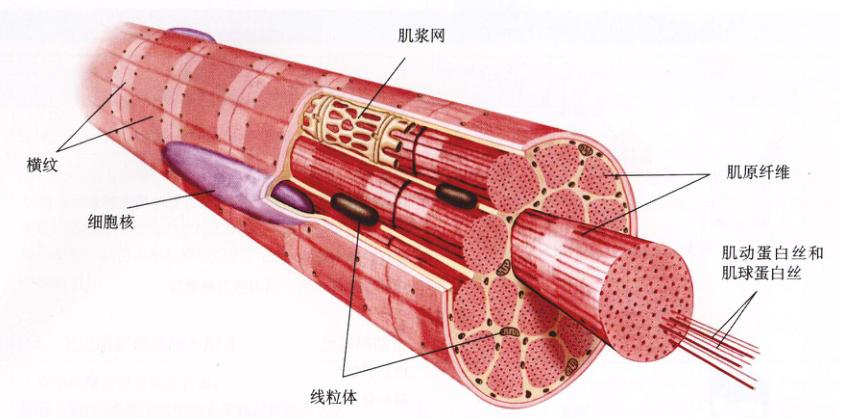
图 49.11 肌纤维（肌细胞） 每一条肌纤维由许多肌原纤维组成。而肌原纤维又由肌动蛋白丝和肌球蛋白丝组成。由于每一条肌纤维在胚胎发育过程中由许多小的细胞融合而成，因此肌纤维是多核的。肌细胞的内质网特化为肌浆网。
49.4.2 神经组织
脊椎动物的第四种重要的组织就是神经组织 (nerve tissue)（表 49.5）。神经组织细胞包括神经元 (neuron) 和 神经胶质细胞 (neuroglia)，又称作支持细胞。神经元是一种特殊分化的细胞，能够产生和传导电信号，这种电信号通称电冲动。一个神经元包括三部分：细胞体、树突 (dendrite) 和 轴突 (axon)（图 49.12）。神经元的胞体具有细胞核。树突是细而短，高度分化的突起，能够接受传入的刺激，并将其电冲动传给细胞体。由于传入的电冲动，细胞体在轴突发起处产生一个外流的电冲动。轴突是一个无分支的突起，通过其中的细胞质将电冲动传出细胞体。有些轴突很长。例如，控制你的脚部肌肉的神经元细胞体位于脊髓内，而轴突延伸长达一米到达你的脚部。
神经胶质细胞不能传导电兴奋，但是它能起到支持和绝缘的作用，并且它能阻止外界物质进入神经元。在许多神经元中，神经胶质细胞与轴突相连，形成绝缘的覆盖物，称为髓鞘 (myelin sheath)。髓鞘连续地包绕在轴突膜上（图 49.13）。相邻的神经胶质细胞由朗飞氏节 (node of Ranvier) 隔开，朗飞氏节能起到加速冲动传导的作用（见第 54 章）。
神经系统分为中枢神经系统 (central nervous system, CNS) 和 周围神经系统 (peripheral nervous system, PNS)。中枢神经系统包括脑和脊髓；周围神经系统包括神经 (nerve) 和 神经节 (ganglia)。神经由周围神经系统的轴

图 49.12 神经元具有很长的轴突 (a) 神经冲动由树突接收，传导至细胞体，再通过轴突传出。(b) 轴突可以很长，一根轴突从长颈鹿的头骨通过颈延伸数米一直到骨盆。
Page 16 / 原始页码 964
表 49.5 神经组织
|
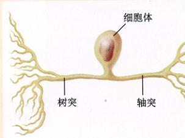
|
感觉神经元
典型部位：眼、耳、皮肤表面
功能：接收机体状况和外环境的信息，将冲动由感觉感受器传至中枢神经系统
特征细胞：锥细胞和杆细胞、肌肉张力感受器
|
|
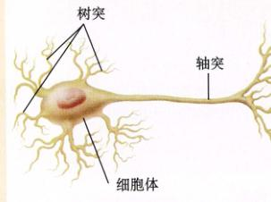
|
运动神经元
典型部位：脑和脊髓
功能：刺激肌肉和腺体，将冲动传出中枢神经系统，传入肌肉和腺体
特征细胞：运动神经元
|
|
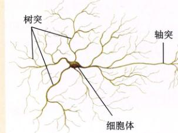
|
联合神经元
典型部位：脑和脊髓
功能：整合信息，将冲动在中枢神经系统神经元间传导
特征细胞：联合神经元
|
突簇集而成，就好像电线捆扎成电缆。神经节是由细胞体聚集而成的。
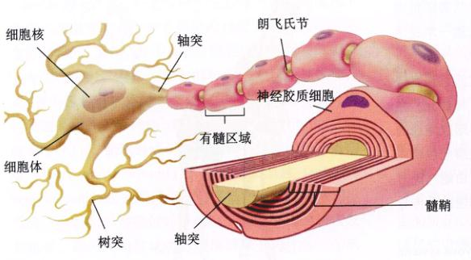
图 49.13 有髓神经 细胞体向外伸出许多树突，但是只有一个长的轴突。有些特化的神经元，能够快速传递传导信号，它的轴突被髓鞘包裹，髓鞘相隔一定距离就有间隙。轴突的远端分支，并终止于多个细胞。
(舒骁 葛月宾 孟庆雄 张荣庆 译校)
Page 17 / 原始页码 965
小 结
49.1 脊椎动物体是一个功能完备的系统
- 脊椎动物体由细胞、组织、器官和系统层层组织起来，分别负责不同的功能。
- 发育成熟的脊椎动物体的四大组织：上皮组织、结缔组织、肌肉组织和神经组织，由三个胚层分化而来。
49.2 上皮组织组成膜与腺体
- 上皮组织覆盖整个机体表面。
- 复层上皮，尤其是角质化的表皮起保护作用，而单层上皮则适于分泌和运输。
- 外分泌腺将分泌物排至管中，运送至上皮组织表面。内分泌腺所分泌的激素直接排入血液中。
49.3 结缔组织含有丰富的细胞间质
- 结缔组织的特点是具有丰富的细胞间质。在固有结缔组织中，细胞间质由纤维蛋白质和凝胶状基质组成。
- 疏松结缔组织含有多种细胞，如脂肪细胞和肥大细胞，规则致密结缔组织组成腱和韧带。
- 特化结缔组织包括软骨、硬骨和血液。营养物质可以在软骨基质中扩散，但是不能通过钙化的硬骨基质，所以硬骨基质含有微管。
49.4 肌肉组织起着运动的作用，神经组织起着控制的作用
- 平滑肌由纺锤形的细胞组成。平滑肌形成内环境中的器官和血管壁。
- 骨骼肌和心肌属于横纹肌。骨骼肌受支配，而心肌则不受其支配。
- 神经元包括细胞体、一个或多个树突和一个轴突。在周围神经系统中，神经元胞体组成神经节，轴突组成神经。
- 神经胶质细胞除具有支持作用外，还具有绝缘轴突、加快电冲动传导的作用。
问 题
- 什么是组织？什么是器官？什么是系统？
- 上皮组织分为几种？它们的结构和功能分别是是什么？
- 两种腺体分别是什么？它们的结构和功能分别是什么？
- 所有结缔组织所共有的特点是什么？有哪些不同的结缔组织？举例说明。
- 韧带的结构是什么？软骨和硬骨的区别是什么？为什么血液属于结缔组织？
- 肌肉是从胚胎的哪个组织分化而来的？肌肉中含哪两种具有收缩性的蛋白质？肌肉组织被分为哪三种？其中哪两种是横纹肌？
- 为什么骨骼肌纤维是多核的？心肌闰盘的功能是什么？
媒体资源
- 实践活动：哺乳动物的体腔
- 上皮组织
- 上皮腺
- 组织
- 结缔组织
- 肌肉组织
- 神经组织
- 技能测验：肌纤维
- 肌纤维
- 神经组织